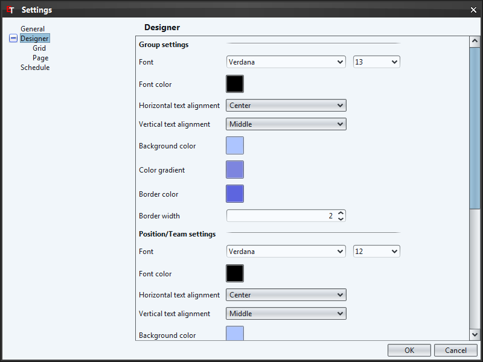
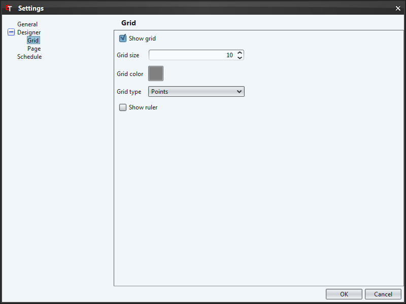
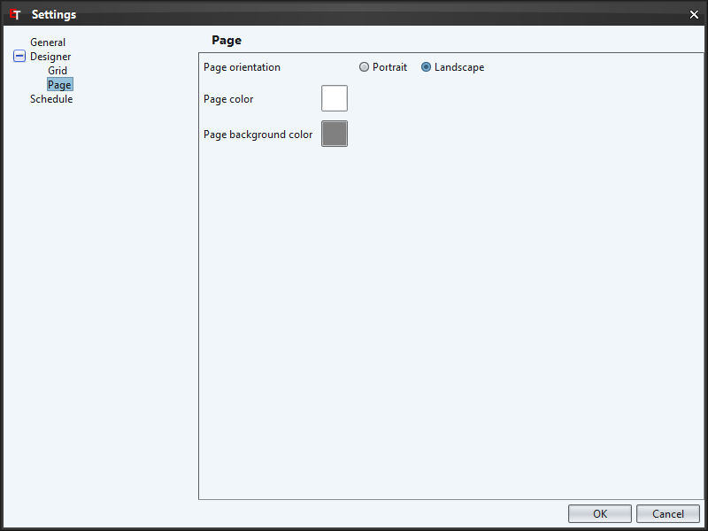

back to the index

This dialog allows you to set the default colors, fonts etc. of groups, positions and lines/arrows.

Various settings for the grid and the ruler.

Default page orientation and color